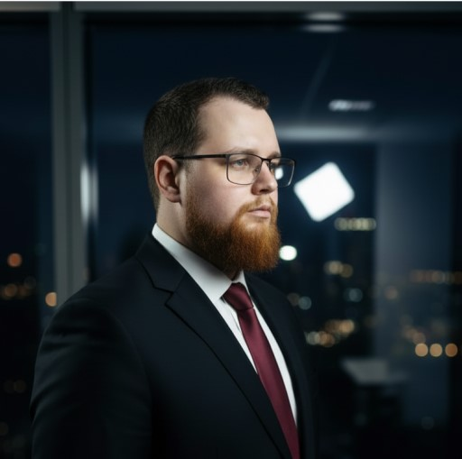

Gestor de Riscos & Prevenção de Perdas | GRIS Logístico | Compliance | Auditoria | Redução de Perdas | Liderança Regional | Direito
Curitiba, Paraná · Jho1995jho@gmail.com
Celular/WhatsApp: (41) 99762-4762
Atualmente, atuo como Supervisor do GRIS na TotalExpress, responsável pela gestão de Prevenção de Perdas e Segurança Patrimonial. Possuo ampla experiência em processos de liderança em grandes equipes, formação em Gestão Financeira, e atualmente cursando Bacharelado em Direito
Responsável pelo desenvolvimento, implementação e gestão de políticas e procedimentos de prevenção de perdas e segurança patrimonial, garantindo a capacitação das equipes e a conformidade com normas internas e legais. Atua no monitoramento e controle operacional por meio da supervisão de sistemas de vigilância e acompanhamento das operações logísticas, com foco na identificação e mitigação de riscos. Realiza auditorias periódicas de estoques e processos, implementando controles para redução de divergências, furtos e falhas operacionais. Conduz investigações de incidentes como fraudes e desvios, atuando em conjunto com áreas internas e autoridades quando necessário. Analisa indicadores de perdas e riscos, elaborando relatórios gerenciais e planos de ação estratégicos. Desenvolve e aplica programas de treinamento e conscientização, promove a gestão de riscos e a segurança física das instalações, e mantém integração constante com áreas estratégicas para assegurar processos seguros e eficientes. Também gerencia o relacionamento com fornecedores e clientes, estabelecendo políticas que garantam a integridade das operações e a redução de vulnerabilidades.
Atuação no desenvolvimento e implementação de políticas e procedimentos de prevenção de perdas, assegurando o treinamento das equipes e a padronização dos processos. Responsável pelo monitoramento e vigilância das operações por meio da supervisão de sistemas de segurança e da identificação de atividades suspeitas envolvendo clientes e colaboradores. Realiza auditorias regulares de inventário e implanta controles de estoque para prevenção de furtos, erros e desvios. Conduz investigações de incidentes, como fraudes e perdas relevantes, atuando em conjunto com autoridades quando necessário. Analisa dados e indicadores de perdas, elaborando relatórios gerenciais para apoio à tomada de decisão. Desenvolve programas de treinamento e conscientização em segurança, implementa medidas de proteção física e executa avaliações de risco para identificação de vulnerabilidades. Atua de forma integrada com outras áreas da empresa, participa de reuniões estratégicas e garante a conformidade com legislações e normas aplicáveis. Mantém relacionamento com fornecedores e clientes, definindo políticas que assegurem a integridade das operações e a redução de riscos.
Gestão de equipes, auditoria de processos, elaboração de indicadores de resultados, elaboração de planos de ações, auditoria de validades e produção, procedimentos decorrentes, acompanhamento de processos em geral
Contratado inicialmente como segurança patrimonial, Promovido para Auxiliar administrativo de recebimento de mercadorias, recentemente promovido para encarregado de prevenção de perdas e liderança e gestão de equipes, auditoria de processos, elaboração de indicadores de resultados, elaboração de planos de ações, auditoria de validades e produção, procedimentos decorrentes, acompanhamento de inventário, elaboração e apresentação de palestras e treinamentos, formação de lideres.
Atividades de defesa e segurança, participa de treinamentos físicos e militares, atua em patrulhas, guarda e operações básicas, manuseia armamento individual com segurança e trabalha em equipe, mantendo a disciplina, a hierarquia e os valores do Exército Brasileiro durante o período de serviço.